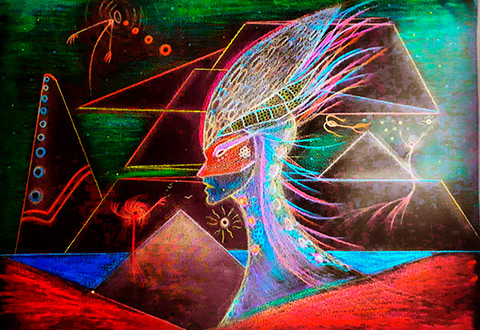

Eco formas exploran biológicas el lágrimal del río. Ocultas
cavernosas espian el pecado del humano. Desde la forma al ciclo
Primal. Catalizan sus raices. Sangra el sol con sus rayos , ilumina
la tierra carmesí. Destello blanco de luz soberbia. Inmaculada la
tierra recombina sus moléculas. Seres nuevos , complejos extremos.
De pálida textura, acuáticos negros de piel cambiante. Renuevan la
natura y al ciclo pretoprotoaurico. Sola en la orilla, canta a las
olas de un renovado mar . color del aire prismado de fulgurante
abundancia. Nuevas especies cromáticas pensantes. Se organizan
simétricas espiraladas. Una mente, una vida. Interconexiones
sensoriales viajan por la esfera terrestre. Magnéticos los campos
las entrelazan y las transmutan. Mundo naciente en la ciudad del
Sol. Las eras vivientes se aplazan por el espacio.

Sonoridades en el viento , despejan hojas secas del laberinto.
Uniones ambivalentes consagran el estadio único del ser. La vida
transcurre inmediata , multidimensional su causal. Cielos verde
azulados con estrellas de oro . Senderos lejanos a extraños mundos
vibran , me llaman , me poseen. Grita la Mar tormenta. Eolo suelta
sus criaturas. Paradigma de luces, destellos de plata. Solemne
melodía de acuario , manifestación de solar , equinoccio psíquico.
Volatilazo el umbral de las puertas de marfil . Guardianes del
tiempo , eternos sin ego. Sueños de un manantial de agua gelida,
lluvia de nube negra. Campos salvajes , pastizales de sombras ,
criaturas voraces. Epifanía multicolor marca la puerta. Oh! Mi vida
, Oh! Mi espectro. Sincronizadas y profundas las vibraciones me
elevan. Trascienden mis moléculas, intervienen mi intelecto.
Creacional y humano , que guie el amor.

Andaré y veré el pernicioso Sueño, encaminado sintiendo los vapores
siderales en porciones, en fragmentos. Me introduciré en la vera del
río de la nada. Le diré al influjo lunar que vierta su luz de plata
en tus ojos, que voy a llevarte lejos en las tinieblas. Ordenaré a
las sombras abstractas y a las aparentemente vivas que armen una
ronda a tu alrededor. Toda la Natura en tus átomos vibrará. Paredes
y espadas se quiebran ante los inmortales, pasean por australes
mundos distópicos, persuadidos por los ruegos del mundo, y una serie
de infortunios modernos. Así, mi susurro formará Palabra y partirá
el Sueño en dos al oír la voz, hallándome dormido en mi cama,
tendido en suspenso... Alrededor del Ángel designado, habiéndome
fundido en el tiempo, posaré mi cabeza y tomaré la figura del
águila. Anciano y fetal honraba la inmensidad. Transfigurada
presente, ante el futuro que otorga. ¿Duermes -me dijo- viajero sin
rumbo? No debe dormir toda la noche el que busca a quien se le ha
confiado la inteligencia, la palabra y el amor... Cuyo amor agotado
se encuentra y se pierden tantas cosas. Ahora atiéndeme en seguida,
ya que vengo como mensajero de lo eterno, el cual aun estando en ti
no ves. Armar el engranaje de tus alas es mi función, pues los
inmortales se elevan al soñar. Graba mis palabras en los escombros
de la mente, en tu memoria, para que no me olvides cuando el Sueño
se desvanezca.

Ella es sombra y visión de un mundo inmaterial. Se impulsa el lahar
por la Arteria Azul de hirviente Sangre. Desde el etéreo mundo
cuántico, modifica cada célula. Existe y se manifiesta en la carne
nacida. Tiran las cadenas , busca libertad, existencia. Relente
belleza abre el portal. La sinastria lunar impacta aureal en la
pupila. Salmacis en Detrimento abraza , domina y arrastra por lo
profundo. Trasforma la forma con su plegaria. Liberada del manantial
primal , doble existencia. Sustancia infinita propaga dimensiones.
Trino de una psiquis de cristal. Eterna y sagrada se eleva en su forma
final. Amada por estrellas , camina oculta y despierta.